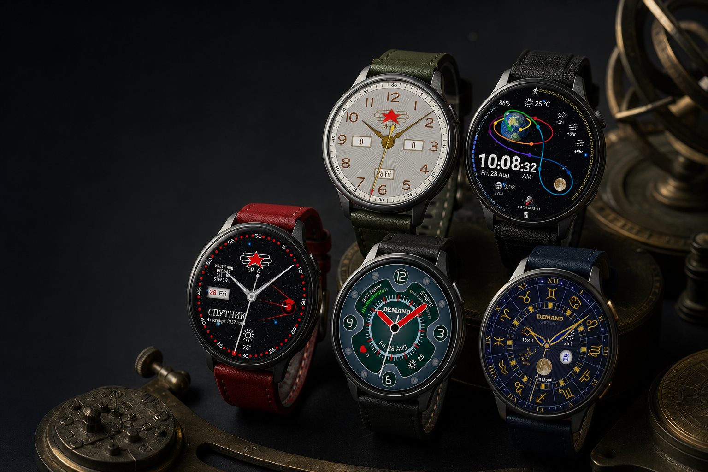
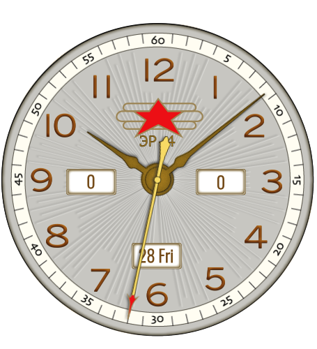
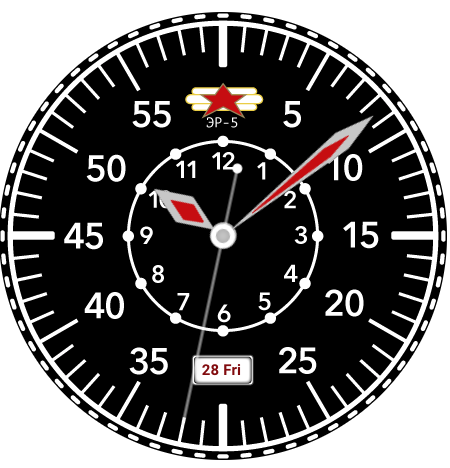
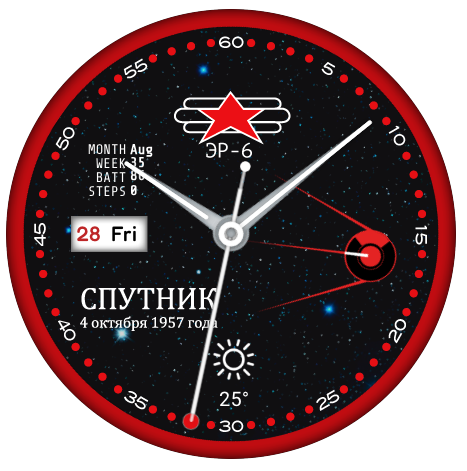
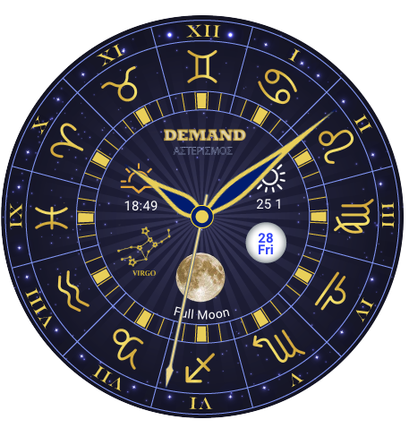

Vintage, reconsidered
References to laboratory instruments, aviation panels and archival typography, translated for a contemporary wrist.

Independent Wear OS studio · Italy
Small-batch watch faces shaped by vintage instruments, mechanical detail and a taste for the unexpected.
Enter the collectionReal Demand Group faces · Presentation mockup
Demand Group / The studio
Demand Group is a small independent studio devoted to distinctive Wear OS watch faces. We approach every dial as a compact designed object — precise enough for daily use, peculiar enough to remain memorable.
References to laboratory instruments, aviation panels and archival typography, translated for a contemporary wrist.
A selective catalogue developed with care. No endless library, no disposable variations — only faces with a reason to exist.
Character never comes at the expense of legibility, battery-aware design or the information you need at a glance.
First collection

DG—01ER4View details +A bright aviation-inspired analog face with a radial dial, bold numerals and distinctive red-star insignia.

DG—02ER5View details +A high-contrast pilot dial that combines an outer minute scale with a compact inner twelve-hour register.
A celebration of Artemis II — the first crewed mission of NASA’s Artemis campaign. Four astronauts flew Orion around the Moon to validate deep-space systems and help prepare the way for future human lunar exploration.

DG—04SPUTNIKView details +A space-age analog face inspired by Soviet-era instruments, set against a deep stellar field.
Provisional product description · Final specifications to be confirmed
A precision-built hybrid dial where exposed hardware, vivid red hands and sculpted digital gauges meet in a bold technical instrument.
Provisional product description · Final specifications to be confirmed
A mechanical dashboard inspired by gears, workshop instruments and layered industrial forms, designed to make everyday information feel tactile.

DG—07ZODIACView details +An elaborate celestial dial combining zodiac signs, lunar phase and classical astronomical references.
Product specifications and Google Play links will be added as each watch face reaches release.
Designed for compatible Wear OS smartwatches using Google’s current watch-face standards, with clear information, considered always-on states and efficient everyday performance.
Wear OS and Google Play are trademarks of Google LLC. Demand Group is an independent studio and is not affiliated with Google.
Business & support
Demand Group is preparing its first independent releases for Google Play. Official product links and support details will be added here before launch.
demandgroup@tuta.io ↗This presentation website does not use accounts, advertising cookies, analytics or contact forms, and does not intentionally collect personal information.
For the privacy policy covering Demand Group applications and Wear OS watch faces, visit the permanent policy page below.